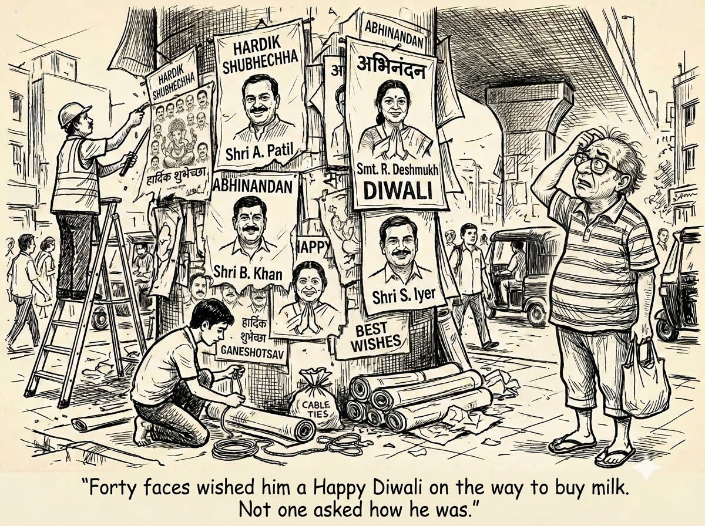
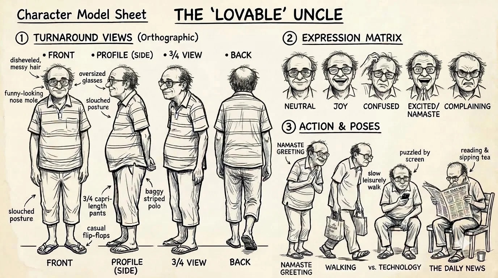
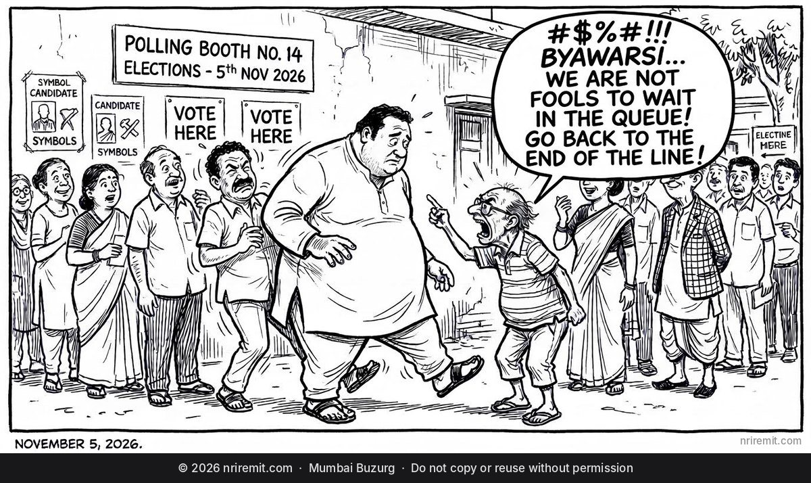
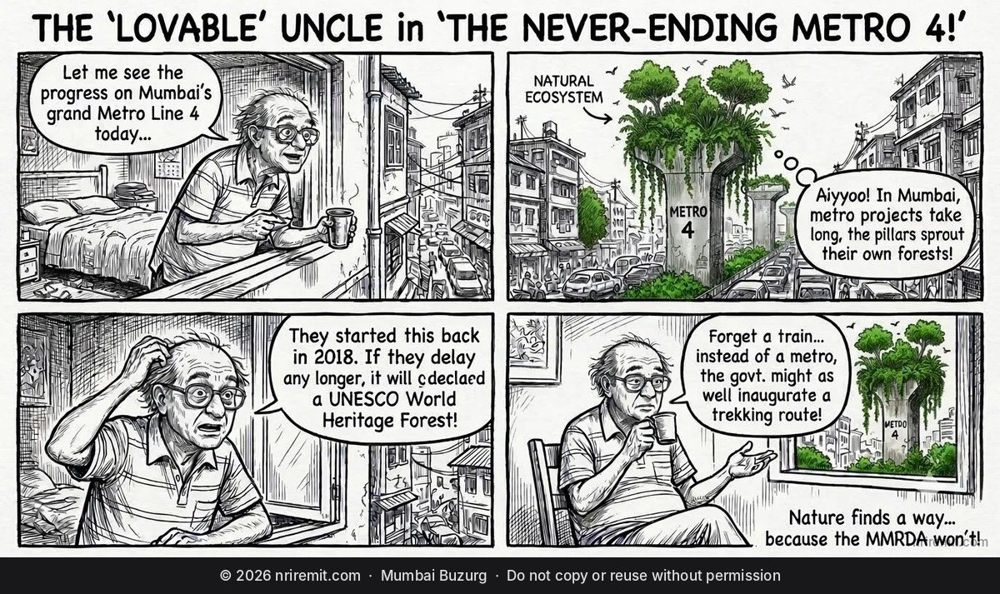

Narayan Uncle watches the city, says very little, and nods at everything that still doesn't make sense.
A retired Canara Bank man from Udupi, settled in Ghatkopar East. In the tradition of R.K. Laxman's Common Man, but with oversized glasses that keep slipping, a BEST pass from 1994 that no longer scans, and ₹500 folded small, "for emergency".

Latest strip · The hoardings ·
Behind the strip: the BMC's festive-season drive removed thousands of illegal banners and hoardings, and only about 15 FIRs followed (Free Press Journal, 12 Nov).
the character

Name
Narayan. No surname needed. The whole building has called him Narayan Uncle since 1978.
Age
Mid-70s. Retired twenty years ago from Canara Bank. Still reconciles his passbook by hand.
From
Born in Udupi. In Mumbai since the first local to Dadar had a wooden interior. English with almost everyone, Marathi with the paper-wallah, Hindi with the auto, and a few words of Tulu on the Sunday call home. Fluent in Local Train.
Lives
A one-bedroom in Ghatkopar East, two lanes off R B Mehta Marg. The building has four Sharmas, three Patels and two Iyers. He is related to none of them, and is Uncle to all of them.
Look
Slightly heavy build and a settled slouch. Disheveled salt-and-pepper hair that never lies flat. Oversized glasses and a small mole on the nose.
Wears
A baggy striped polo, 3/4 capri-length trousers and casual flip-flops. Nothing that needs ironing.
Carries
Two cloth jhola bags, one per hand, filled at the sabzi-wallah. A BEST bus pass from 1994 that no longer scans. ₹500 in cash, folded small, "for emergency".
Signature
The glasses, pushed up when he is thinking. The slow, leisurely walk. The two-second pause before he answers anything.
Catchphrase
Half-muttered, over filter coffee: "What nonsense is this, I say." On rare occasions, under his breath, a single Tulu "Appa."
what he's made of
Will not bribe the RTO clerk. Returns the ten rupees the sabzi-wallah gave back by mistake. Pays the exact fare, in coins, counted twice before boarding.
Says perhaps twelve words a strip, almost always in English. The eyebrow carries the rest, and the two-second pause before it tells you he caught what everyone else missed.
A ten-second outburst — "Arre, what rubbish is this!" — ending, on the hottest days, with a muttered Tulu "Appa." Then, quietly, he buys the same man a cutting chai. The temper is loud. The forgiveness is louder.
sample panel
"Forty faces wished him a Happy Diwali on the way to buy milk. Not one asked how he was."
Narayan Uncle · a Ghatkopar flyover · from the latest strip

